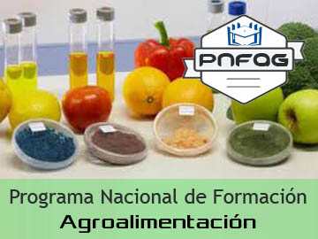
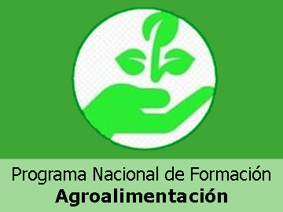

Perfil de la Carrera:

La carrera de Agroalimentación es una disciplina que combina conocimientos de agricultura, ingeniería,
química y economía para garantizar la producción, procesamiento, distribución y consumo de alimentos de
manera segura, eficiente y sostenible. En otras palabras, Los profesionales en Agroalimentación se ocupan de toda la cadena alimentaria,
desde la producción en el campo hasta la llegada de los alimentos a nuestra mesa.
¿A quien va dirigido?
-
¿Te apasiona la producción de alimentos y quieres contribuir a un mundo más sostenible? La carrera de Agroalimentación te brinda
la oportunidad de transformar el sistema alimentario y garantizar alimentos saludables y seguros para todos.
Aprenderás a optimizar los procesos de producción, procesamiento y distribución, desde el campo hasta la mesa.
-
Es la carrera ideal para aquellos que desean desarrollar habilidades como la producción agrícola, el procesamiento de alimentos,
el control de calidad y la gestión de empresas alimentarias. Si te interesa la ciencia, la tecnología y
la sostenibilidad, esta carrera te proporcionará las herramientas necesarias para enfrentar los desafíos del
sector alimentario.
Informacion sobre los trayectos:
La carrera de Agroalimentación te ofrece múltiples caminos para alcanzar el éxito profesional. En nuestra
institución, hemos diseñado cuatro trayectos especializados que te permitirán desarrollar las habilidades
necesarias para destacar en el dinámico sector alimentario.
Certificados y titulos:

Aula virtual:

Plan Rector:
